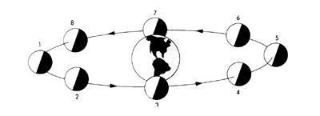
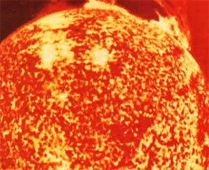
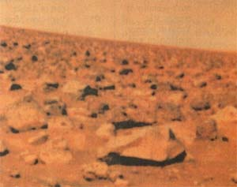
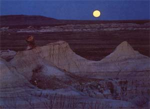
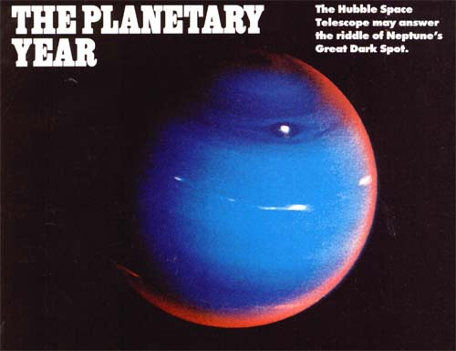
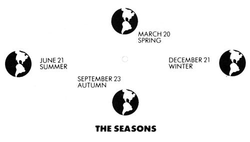
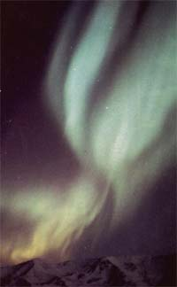

Issue # 121-January/February 1990
WHETHER YOU'RE ANaccomplished amateur astronomer or simply a casual observer, 1990's night skies will offer some real treats. Among the astronomical events of the months to come are the best look at Mars we'll get until 2001, and many striking conjunctions (close pairings) of the moon with major planets. Topping the list, though, is the likelihood that the sun will reach an unusually high peak of activity rivaling even 1957-58's record maximum. One result will be brilliant displays of northern lights visible virtually everywhere in the United States.
A calendar illustrated by the kaleidoscopic night sky.
This year, our sun is expected to enter a period of unusually high activity-perhaps the highest in centuries-producing many sunspots and solar flares.
LUNAR LORE Dates are based on eastern standard and eastern daylight time. Some dates, therefore, may differ by a day in other time zones. Right: Sunlight, reaching the moon from the upper left in this illustration, creates its phases- 1) new moon, 2) crescent, 3) first quarter, 4) gibbous, and 5) full. The moon then wanes through the sequence in reverse. Far right: A calendar of moon phases.
The sun reaches a period of "maximum" activity-sunspots, flares, etc. -every 11 years or so. However, this year's anticipated maximum-expected around March-may present us with a higher level of activity than almost any other year in recent centuries.
That's the logical conclusion, at least, to be drawn from 1989's activity, which produced dozens of naked-eye sunspot groups and counts of over 260 sunspots at a time by expert observers. (Never view the sun directly unless you have the proper filters and the expertise to use them.) Last year, solar flares disturbed radio and electrical systems all over the world (6 million people in Quebec temporarily lost their electricity thanks to one of the March flares). And on the nights of March 12 and 13, 1989, the northern lights shone spectacularly, casting glowing, fluctuating patches of red light across all the U.S. and as far south as Central America! [Editor's note: For a thorough discussion of the northern lights, details on when and where to look for auroral displays, and tips on observing and photographing the phenomenon, see Mr. Schaaf's article, "Return of the Northern Lights, "in the September/October 1989 issue of MOTHER.
The red planet, Mars, will shine with uncommon brilliance in the night skies this summer and fall
On December 2 this year, the moon will be as close to us as it will get in the final quarter of the 20th century. On that day the distance from the moon's center to Earth's will be just 221,545 miles-only 93 miles more than its absolute closest approach during the period 1750 to 2125. Also in December, the moon will be full twice in the same month-a situation not to be repeated until August 1993.
In 1990 the moon will come as close to Earth as will get for the rest of this century, and we'll wit ness two ,: full moons in the same month: December.
Even more intriguing than the near moon, though, are 1990's opportunities to see breathtakingly slender lunar cres cents. Back on May 5, 1989, using 11 X 80 binoculars, Robert C. Victor in East Lansing, Michigan, set a new world record for seeing the moon soonest after the invisible new moon phase: 13 hours, 28 minutes after new. On May 24, 1990, observers on the East Coast of the U.S. will have an opportunity to see a moon even "younger" than Victor's. And April 25 and November 18 will also provide chances to see thin crescent moons low in the west after sunset. Superb charts for helping find all the year's slender crescent moons (as well as others for locating and viewing the stars and planets) can be found in Guy Ottewell's excellent atlas-sized Astronomical Calendar, available for $14 postpaid from Astronomical Workshop, Furman University, Greenville, SC 29613.
For most Americans, this will be a poor year for viewing eclipses. January 26's annular solar eclipse won't be visible at all from the U.S., and the total lunar eclipse of February 9 and partial lunar eclipse of August 6 will be visible in the United States only from parts of Alaska. Likewise, July 22's total solar eclipse will appear as just a small partial eclipse near sunset in the U.S., and then only for observers on the Pacific Coast and in Alaska, Hawaii, and the Northwest.
Eclipse enthusiasts can take some consolation, though, knowing that 1990 brings us just that much closer to July 11,1991: the date of the longest total solar eclipse for decades to come. Baja California and the Big Island of Hawaii are the favored spots for viewing what promises to be an awesome event, one none of us should miss. Would-be eclipse tourists had better make their reservations soon, though; hotels in prime viewing areas are already filling up. (One experienced tour agency handling the 1991 eclipse is Scientific Expeditions, Code F, 211 East 43rd St., Suite 1404, New York, NY 10017.)
Meteors, more popularly called shooting stars or falling stars, are actually pieces of rock or iron from outer space that burn up in our atmosphere from friction with air molecules. On certain nights of each year, our planet passes through concentrations of meteoric material believed to be particles from the dust tails of comets. When this happens, increased numbers of meteors streak out of the skies from what appears to be a single point (a radiant). We call this phenomenon a meteor shower, and have named the major annual showers for the constellations from which they seem to originate.
This year, only one of the major showers-November's Taurids--will be entirely obscured by bright moonlight. Most of the others will provide excellent viewing-given, of course, cloudless skies and viewing sites well away from city lights.
The Quadrantid meteors are most likely to come in greatest numbers-no more than a few dozen per hour usually, but sometimes far more-from the northeast before dawn on January 3. The Lyrid meteors (about 10 an hour, most years) will zoom out of the northeast in the late evening on April 21 before moonrise.The Eta Aquarids come from the southeast before dawn at rates of 10 or more per hour at their best; look for them at their peak around May 3 or 4. The Delta Aquarids (at best, several dozen an hour or more) will glide out of the south after mid-night moonsets in the last few nights of July. The normal ly spectacular Perseids (August 11 to 13) will be partially dimmed by moonlight this year, but they may still offer dozens of meteors per hour well after midnight to lucky country observers. On October 20 and 21, the Orionids will streak from the south before dawn at rates of 25 or more per hour in very dark, clear skies. The Leonids will come from the south before dawn on November 16 and 17; this year, they may come in greater than their usual numbers of five or 10 an hour. And finally, the Geminids should be excellentup to 50 or more per hour on December 13 or 14 before late-night moonrises.
The brightest comet predicted to return in 1990 is our frequent visitor Comet Encke, which should be making one of its best returns and will be easily visible in small telescopes. Check astronomy magazines (such as Sky & Telescope and Astronomy) throughout the year for updates on when and where Comet Encke will be appearing in the skies for viewing.
Mercury, our solar system's innermost planet, is visible only in twilight and only for periods of a few weeks a small number of times each year. In 1990 your best chance to see the planet at dusk will be around April 13; your second best chance should come around December 5. Early risers, on the other hand, should mark September 24 on their calendars as their best opportunity to see Mercury at dawn. Mercury will have close but low and hard-to-observe conjunctions (meetings) on February 3 (with Saturn) and on July 28 (with the star Regulus).
Venus outshines all other stars and planets in the heavens whenever it's visible. As 1990 opens, the planet offers us its last few weeks of visibility as evening star. Steadily held binoculars should reveal Venus in a skinny crescent phase as it approaches us. After its closest approach on January 18, when the planet's position between Earth and the sun will make it invisible to us, Venus will move west of the sun and, a few weeks later, appear low in the east before dawn. As the morning star, Venus will reach greatest brilliancy on February 22 and greatest elongation-its farthest point from the sun, as viewed from Earth-on March 30. Unfortunately, it won't be favorably high for viewing. Although this is mostly a poor year for U.S. observers of Venus, the planet will have a striking (but low) conjunction with Jupiter on August 12 and 13 and with the moon (first on March 23, and again on August 18).
Also, if all goes well, two U.S. spacecraft will visit Venus in 1990. The Galileo spacecraft, en route to a 1995 encounter with Jupiter, will zoom by Venus (using it for a gravitational boost) on about February 9. And on August 10 the Magellan spacecraft will go into orbit around Venus, beginning a long study that will include detailed radar mapping. The observations should help answer many questions about this hot, eternally clouded planet-including whether Venus does have volcanoes (as is strongly suspected) and whether it ever had oceans before its runaway greenhouse effect altered the planet's climate.
Earth comes closest to the sun (perihelion) on January 4 and will be farthest from the sun (aphelion) on July 4. This year is also the one year in which Earth will be visited by a spacecraft from Venus . . . a returning Earth spacecraft, that is! After it has gathered a gravitational boost from Venus, Galileo will twice get similar boosts from Earth before racing out on its way to Jupiter. The Earth encounters will occur on December 8 this year and on December 8 in 1992, and they promise to be fascinating. Among other things, Galileo will check for ancient ice in polar craters on the moon that
I have never received direct sunlight, and will try to take the first-ever movie of an entire Earth rotation!
Mars returns in 1990 to great naked-eye brilliance and respectable telescopic-viewing size after an "off" year. Although the planet won't come nearly as close to Earth as it did in the extraordinary approach of 1988, this will be an exciting year to watch it-the best until 2001. Mars will have close conjunctions with Saturn, Uranus, and Neptune in February dawns, but only the pairing with Saturn at month's end will be plainly visible to the unaided eye. Then the planet will head rapidly north up the zodiac. On June 30 it will reach its closest point to the sun in space, but Earth will continue to get closer to Mars, and Mars will continue to appear brighter, all summer long. By September the red planet (it's really a golden orange hue) will be rising before midnight in Taurus, outshining all stars but Sirius. Still brightening, Mars will linger in this northerly part of the zodiac and then begin retrograde motion (appearing to move westward against the background of stars) on October 20. For the next two months Mars will be virtually as high in the sky as it ever appears to U.S. observers, and will brighten to a marvelous magnitude - 2 in the second half of November. Mars will reach opposition-the point at which Earth is aligned between the planet and the sun-on November 27, remaining visible all
night long.The planet will actually come closest to us (about 48 million miles away) on November 20, when it will also appear biggest when viewed with telescopes.
The final two months of 1990 will also bring striking conjunctions of Mars and the moon. Look for the imposingly bright, ruddy planet close to a nearly full moon on the evenings of November 4, December 1, and December 28.
Jupiter comes to opposition usually the best time to view a planet-about every 13 months. Unfortunately, 1990 is an example of the one year in Jupiter's 12-year orbit when it doesn't come to opposition. Nonetheless, it will be almost at its best in both January and December.
The only time Jupiter will not be visible at all this year will be during a few weeks around July 15 when it reaches conjunction with the sun (the point at which a planet is on the opposite side of the sun from Earth). Just before then, it will appear prominently in the evening in Gemini; just afterward, it will enter the predawn sky in Cancer each morning until rising before midnight again late in the year. Jupiter will have a close (but lowin-morning-twilight) conjunction with Venus on August 12 and 13 and will have a number of close encounters with the moon, including lovely pairings with lunar cres cents on June 23 (evening) and September 15 (morning).
Saturn will shine in Sagittarius all year but will be too close to the sun to see for most of January. After its conjunctions with Mercury and Mars (on the mornings of February 3, and February 28 to March 1, respectively), the most beautiful of all the ringed planets will rise ever earlier and brighter in the night sky. Saturn will begin retrograde motion on May 5 and will reach opposition-rising at sunset-on July 14. Low in the south, golden Saturn will be at its brightest, rivaling the most brilliant summer stars. Even a small telescope will reveal the planet's glorious rings, tilted somewhat less than they have been in recent years. Interestingly, Jupiter will be at conjunction on the far side of the sun the day after Saturn's opposition, so the two largest planets in the solar system will be on almost exactly opposite sides, with the sun and Earth aligned almost directly between them.
Saturn will halt its retrograde motion and begin direct (west to east) motion on September 23, after which it will remain prominent in the southwest sky after dusk for a few more months before becoming obscured by evening twilight late in the year.
Uranus will pull slightly closer to slower Neptune in Sagittarius (both of them somewhat west of Saturn) this year. The planet, rolling around its orbit on its side and circled by at least 15 moons and a number of dark rings, is making slow but steady progress toward an unprecedented event that will take place in 1993: the first UranusNeptune conjunctions the human race has ever seen!
You can view Uranus with binoculars or even with the naked eye on a moonless country night if you have a good finder chart such as those in the Astronomical Calendar. Best viewing should be around the time Uranus reaches opposition, on June 29.
Pluto was at its closest to the sun for the first time in 248 years just last September. But its closest approach to Earth-a little less than 2.7 billion miles away-will occur around the time of its opposition this year. Unfortunately, that opposition will fall on May 7, near a full moon that will obscure the view. But you can't really expect to glimpse this dim world, even on moonless nights in April or May, unless you have at least a six-inch to 10-inch telescope, country skies, and detailed finder charts. Pluto is thought to be only about 1,460 miles widesmaller than our own moon and less than half of Mercury's width. The only known planet that has not been photographed close up by a spacecraft, Pluto is known to have a moon (dubbed Charon) that's over half as big as Pluto itself-and only 12,400 miles from its mother planet.
Neptune made front-page news last August when Voyager 2 gave us our first close-up look at this blue world and its assortment of at least eight major moons and mysterious rings. In addition to revealing a clumpy, moon-studded ring and many unusual cloud features (including the Earth-sized Great Dark Spot), Voyager 2 showed us the solar system's strangest moon: pink and blue and dazzling white Triton, with its ice volcanoes and remarkable hodgepodge of terrain. If the Hubble Space Telescope is put into Earth orbit by the space shuttle this spring as planned, it should be powerful enough to provide more views of the Great Dark Spot. Back here on Earth, though, ground-based observers with relatively small telescopes must settle for glimpsing Neptune as a blue dot or point of light. To do so, you'll need detailed finder charts and a clear, moonless, country night. Look for Neptune in Sagittarius between Saturn and Uranus; best viewing should be around the time of opposition on July 5.
Incidentally, Neptune became our most distant planet in 1979 and will remain so until 1999, when Pluto, now traveling away from us, will swing out beyond Neptune's orbit and regain its position (to be held for roughly the next 230 years) as most distant planet.
The red plane, Mars, will shine with uncommon brilliance in the night skies this summer and fall.
EVENTS FOR 1990
When and where to watch the skies.
One star indicates the event is of special interest; two indicate even higher interest.
One of nature's most amazing sights: clouds of shifting, dancing colors, known as the northern lights or aurora borealis. This year, such displays may be visible across all America.
JANUARY
3* Quadrantid meteors good in moonless dawn sky.
4 Earth at perihelion, noon EST.
9** Moon near Jupiter.
10** Last nights of Venus's visibility as evening star.
18 Venus at inferior conjunction with the sun.
22 Moon near the star Antares this morning.
23 Moon near Mars this morning.
26 Annular eclipse of the sun, not visible from U.S.
FEBRUARY
1* Venus returning
to visibility, now morning star.
3* Low, hard-to-see, but very close Mercury-Saturn conjunction at dawn.
5* Moon near Jupiter.
9 Total lunar eclipse, not visible from U.S. except part of Alaska.
9* Very close Mars Uranus conjunction at dawn (but needs telescope).
22** Venus at greatest brilliancy as morning star.
27-28** Close MarsSaturn conjunction before dawn.
MARCH
1** Sun may reach unusually high maximum of activity this month. Watch out for northern lights, especially this month and next.
4-5* Moon near Jupiter.
20 Spring equinox,
4:19 PM EST.
21 Moon near Saturn.
22** Moon hides Mars in daytime (around 1 PM EST) for parts of U.S. (needs telescope).
23** Moon near Venus.
30** Venus at greatest morning elongation from the sun.
APRIL
1 Set clocks forward one hour for day light saving time.
13** Mercury at greatest evening . elongation; best evening appearance of the year.
20-21 * Lyrid meteors good before late moonrise.
25 Very high tides (perigee only 13 hours after new moon).
25** Good chance to see extremely thin lunar crescent low in west soon after sunset.
MAY
4* Eta Aquarid meteors best be fore dawn in moonless sky.
7* Pluto at opposition, unusually less distant from Earth this year (but still needs telescope). 15 Moon near Saturn this morning.
23-24 Very high tides (perigee only nine hours before ne,u moon).
24** Chance to see a world-record thin lunar crescent low in west soon after sunset.
26** Jupiter near crescent moon in west after sunset.
JUNE
11 Moon near Saturn this morning.
21 Summer solstice,
12:33 PM EDT.
23** Jupiter near very thin lunar crescent, low in west soon after sunset.
29* Uranus at opposition (needs telescope in city or with moon up).
JULY
3* Venus in conjunction with star Aldebaran beforedawn.
4 Earth at aphelion,
1 AM EDT.
5* Neptune at opposition (needs telescope).
8* Full moon near Saturn this morning.
14** Saturn at opposition.
22** Total solar eclipse-but from U.S. only visible as partial solar, and only for west ernmost states.
22* Venus passes very close to three stars in Gemini during next two weeks.
29* Mercury veryclose to star Regulus, low in west after sunset (may need binoculars).
29** Delta Aquarid meteors at best after midnight around this date.
AUGUST
6 Partial lunar eclipse visible from southwest Alaska.
11-13* Perseid meteors, partly spoiled by lastquarter moon.
12-13** Very close Venus-Jupiter conjunction.
18** Moon hides Jupiter in daytime (9 Am EDT) for parts of the U.S. (telescope needed), after Moon Jupiter Venus dawn gathering.
31 Moon near Saturn this evening.
SEPTEMBER
7* Close Venus Regulus conjuntion at dawn (may need binoculars).
15** Moon near Jupiter this morning.
23 Autumn equinox,
2:55Am
EDT.
24** Mercury at greatest morning elongation, bestmorning appearance of year.
25-26* Mars-Aldebaran conjunction.
Late September* Venus lost from view low in morning twilight.
OCTOBER
4* Harvest moon.
20* Mars, now brilliant, begins retrograde motion.
20-21**Orionids good these mornings in moonless country skies.
28 Set clocks back one hour for return to standard time.
NOVEMBER
4** Moon near bright Mars this evening.
9** Moon near Jupiter this morning.
12-13** Second Mars Aldebaran conjunction.
16** Leonid meteors good in moonless dawn sky.
18* Mercury near
very thin lunar crescent low in the west just after sunset. 19-20** Mars closest, biggest in telescopes.
21 Moon near Saturn this evening.
27** Mars at
opposition.
DECEMBER
1** Moon near bright Mars this evening.
2** First full moon of the month.
Closest moon in many years (perigee only three hours after full moon).
5* Mercury at greatest evening elongation.
13-14** Geminid meteors good until 2 to 3
AM moonrise.
15** Moon hides star Antares at dusk; early evening for westernmost states (needs telescope).
21 Winter solstice, 10:07 PM EST.
28** Moon near bright Mars this evening (second time this month).
31 * Second full moon of month.
|
 |
 |
 |
|
 |
 |
 |
|
 |
|
|